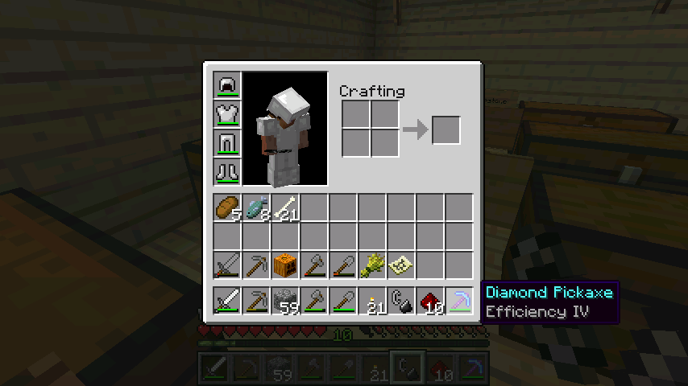

首页
上一页
3
4
5
6
7
8
8
9
10
11
12
13
下一页
末页
defanive2
无尽黑夜
14
挖完钻石了，不得不赞叹一下FortuneIII，下面上一些截图
270楼
2012-08-04 22:57
defanive2
无尽黑夜
14
这个是第一次用的时候，4个钻石矿出了13个钻石，简直是RP最好的一次了
271楼
2012-08-04 23:00
defanive2
无尽黑夜
14
剩下的一些图，后面的没截了
这个时候不得不感叹一下，留下钻石矿的确是一个正确的选择
272楼
2012-08-04 23:02
defanive2
无尽黑夜
14
最后挖完储备回来，总共31个钻石矿，出了66个钻石，大约是翻倍左右
至于绿宝石我没有挖，我等着silk touch，感觉镶嵌在石头里面的宝石粒很好看
273楼
2012-08-04 23:03
defanive2
无尽黑夜
14
话说最近一直在看奥运，感觉各种励志啊
274楼
2012-08-04 23:04
defanive2
无尽黑夜
14
出去花了好多时间逛地图，现在来直播一下
277楼
2012-08-05 00:15
defanive2
无尽黑夜
14
地图目标是右下角，然后往右上角，然后再穿过中间，到村庄，然后再到左下角
路线有点绕远了，不过好奇心驱使，想往右下角先走
278楼
2012-08-05 00:16
defanive2
无尽黑夜
14
临走之前繁殖一下羊，黑色和白色会出什么呢？
279楼
2012-08-05 00:20
defanive2
无尽黑夜
14
黑色
其实纯粹是RP问题，黑白都有可能，灰色是不可能的
280楼
2012-08-05 00:21
defanive2
无尽黑夜
14
看了很多存下来的图片，发现都没什么亮点
于是决定不发了，发一下地图全景吧
左下角一直都是热带雨林，路极其难走，甚至有部分是雨林和高山的合体，简直是探险的噩梦
右下角主要是平原，牛多得不可理喻
右上角主要是沼泽
281楼
2012-08-05 00:26
defanive2
无尽黑夜
14
决定修改
282楼
2012-08-05 00:27
defanive2
无尽黑夜
14
决定修改一下附魔台书架的排列，把这内部的书架搬到外面
283楼
2012-08-05 00:28
defanive2
无尽黑夜
14
现在看起来好多了
284楼
2012-08-05 00:29
defanive2
无尽黑夜
14
实在受不了最近一直直播的繁琐玩一个小时，截一堆图，然后打开贴吧，发一堆图，然后再玩感觉有时候截图的时候很有兴致想发上来，但是到发的时候又觉得没什么特别的浪费了很多图所以我打算，写一个直播器大致目标是，按F2截图之后弹出一个窗口，输入文字之后就把图片和文字发到贴吧上
290楼
2012-08-05 15:45
defanive2
无尽黑夜
14
opera跟贴吧这个控件兼容貌似不好，吞了换行符
打算用VB做吧，这种快速开发就没必要用C++这类牛刀了，C#的话IDE太卡，嗯就用VB6了
很简单的思路，一个低级键盘hook，F2的时候最小化MC的窗口，弹出提交窗口
然后提交窗口检索截图文件，选中最新的一张
操作webbrowser之后上传发贴
总体思路很简单
291楼
2012-08-05 15:49
defanive2
无尽黑夜
14
由于网页版贴吧操作起来比较蛋疼，发贴框是个单独的控件，所以打算用wap版贴吧
不过IE不支持wap贴吧，找个在线的wap转换网站就是了，pctowap，貌似不错
292楼
2012-08-05 15:52
defanive2
无尽黑夜
14
好吧做得差不多了
来测试下看看行不行
295楼
2012-08-05 16:46
defanive2
无尽黑夜
14
好了看起来不错，直播方便多了，F2之后输入文字然后发就是了
唯一不足就是发贴显示出来是来自UC浏览器。。
不过也无所谓了
296楼
2012-08-05 16:49
defanive2
无尽黑夜
14
程序的主界面，标准的VB无美化界面。。
按Start之后就开始键盘监视F2
297楼
2012-08-05 16:55
defanive2
无尽黑夜
14
按了F2之后，最小化MC的窗口，弹出这个
298楼
2012-08-05 16:56
defanive2
无尽黑夜
14
按F2截图之后就会显示出最近的一个截图文件
然后按Submit就发出来了
299楼
2012-08-05 16:56
defanive2
无尽黑夜
14
哈哈效果不错，可以继续打MC直播了
现在直播方便多了
300楼
2012-08-05 16:57
defanive2
无尽黑夜
14
编程方面，webbrowser是无法操作网页中的文件上传框的
原因是微软为了防止程序上传客户端文件到服务器
查遍了网络还是没找到什么方法，以前可用的模拟键盘的方法，新的IE升级废了
反正点击按钮就是调用了打开对话框，把打开对话框给艹了不就是了
API Hook了GetOpenFileNameW，强制返回我指定的文件
毫无鸭梨的破解了限制
总之大概就是这样，继续打MC吧
301楼
2012-08-05 17:00
defanive2
无尽黑夜
14
这个时候貌似的确是没什么事情做了
去地狱吧，看起来很有吸引力
用效率稿挖10块黑曜石先

303楼
2012-08-05 17:05
defanive2
无尽黑夜
14
放上红石
304楼
2012-08-05 17:09
defanive2
无尽黑夜
14
生成黑曜石了，再按一次按钮收回岩浆
感觉1.3的这个对发射器的改进是很不错的
305楼
2012-08-05 17:11
defanive2
无尽黑夜
14
RP真是不好，黑曜石掉到水里面了。。
306楼
2012-08-05 17:14
defanive2
无尽黑夜
14
稍稍做一点改进，这样掉到水里面的黑曜石也会被冲出来了
308楼
2012-08-05 17:18
defanive2
无尽黑夜
14
这个改进还是挺不错的
等晚点吧楼梯都改成牌子，更美观一点
309楼
2012-08-05 17:20
defanive2
无尽黑夜
14
地狱门就打算放在这里吧
防火间进出口是两重门，比较安全，猪人出不去
310楼
2012-08-05 17:23
首页
上一页
3
4
5
6
7
8
8
9
10
11
12
13
下一页
末页